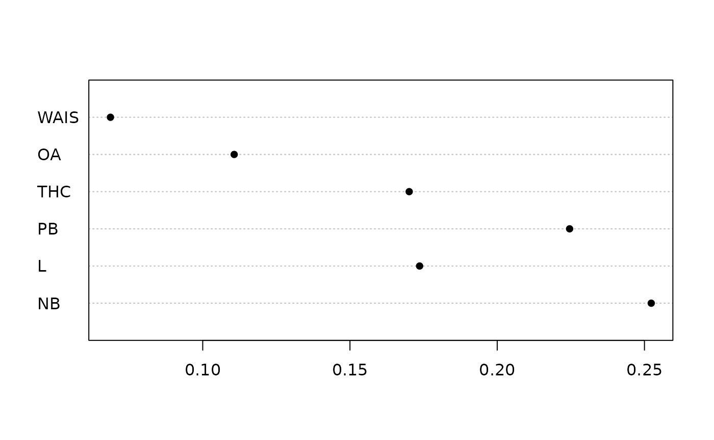

Public perception of climate change: the
icons dataset in the hyper2 package
Robin K. S. Hankin
Source:vignettes/icons.Rmd
icons.Rmd
To cite the hyper2 package in publications, please use
Hankin (2017). This short document
analyses the climate change dataset introduced by O’Neill (2007) and
discussed in the hyperdirichlet R package (Hankin 2010), but
using the improved hyper2 package instead. O’Neill and Hulme (2009) observe that lay perception of
climate change is a complex and interesting process, and here we assess
the engagement of non-experts by the use of “icons” (this word is
standard in this context. An icon is a “representative symbol”) that
illustrate different impacts of climate change.
Here we analyse results of one experiment (O’Neill 2007), in which subjects were
presented with a set of icons of climate change and asked to identify
which of them they found most concerning. Six icons were used: PB [polar
bears, which face extinction through loss of ice floe hunting grounds],
NB [the Norfolk Broads, which flood due to intense rainfall events], L
[London flooding, as a result of sea level rise], THC [the thermo-haline
circulation, which may slow or stop as a result of anthropogenic
modification of the water cycle], OA [oceanic acidification as a result
of anthropogenic emissions of
], and WAIS [the West
Antarctic Ice Sheet, which is rapidly calving as a result of climate
change]. Methodological constraints dictated that each respondent could
be presented with a maximum of four icons. The R idiom below (dataset
icons in the package) shows the experimental results.
## NB L PB THC OA WAIS
## [1,] 5 3 NA 4 NA 3
## [2,] 3 NA 5 8 NA 2
## [3,] NA 4 9 2 NA 1
## [4,] 10 3 NA 3 4 NA
## [5,] 4 NA 5 6 3 NA
## [6,] NA 4 3 1 3 NA
## [7,] 5 1 NA NA 1 2
## [8,] 5 NA 1 NA 1 1
## [9,] NA 9 7 NA 2 0(M is called icons_table in the package). Each row of
M corresponds to a particular cue given to respondents. The
first row, for example, means that a total of
people were shown icons NB, L, THC, WAIS [column names of the the non-NA
entries]; 5 people chose NB as most concerning, 3 chose L, and so on.
The dataset is more fully described in the package. The builtin
icons likelihood function in the hyper2
package may be created by using the saffy() function:
icons## log(L^24 * (L + NB + OA + THC)^-20 * (L + NB + OA + WAIS)^-9 * (L + NB
## + THC + WAIS)^-15 * (L + OA + PB + THC)^-11 * (L + OA + PB + WAIS)^-18
## * (L + PB + THC + WAIS)^-16 * NB^32 * (NB + OA + PB + THC)^-18 * (NB +
## OA + PB + WAIS)^-8 * (NB + PB + THC + WAIS)^-18 * OA^14 * PB^30 *
## THC^24 * WAIS^9)
icons == saffy(icons_table) # should be TRUE## [1] TRUEAt this point, the icons object as created above is
mathematically identical to the icons object in the
hyperdirichlet package (and indeed the hyper2
package), but the terms might appear in a different order due to
disordR discipline.
Analysis of the icons dataset
The first step is to find the maximum likelihood estimate for the
icons likelihood:
## NB L PB THC OA WAIS
## 0.25230 0.17364 0.22458 0.17011 0.11069 0.06867
dotchart(mic,pch=16)
We also need the log-likelihood at an unconstrained maximum:
## [1] -174.997435We see agreement to 4 decimal places with the value given in the
hyperdirichlet package. The next step is to assess a number
of hypotheses concerning the relative sizes of
through
.
Hypothesis testing.
Below, I investigate a number of inequality hypotheses about . The general analysis proceeds as follows; we can use as an example but the method applies to any observation. I consider the general case first, then modifications for one-sided hypotheses.
- We have an observation and wish to quantify the strength of evidence to support this.
- Translate our observation into a hypothesis phrased in terms as a restriction on parameter space.
- State a null hypothesis and alternative. For example, we might have and , and is the complement of . We sometimes write , ignoring the (measure zero) .
- We then attempt to reject and to do this we perform two likelihood maximizations: one unconstrained, corresponding to , and one constrained, corresponding to .
- We calculate and and observe that, in general, implies the strict inequality .
- Calculate the likelihood ratio or equivalently the support for , .
- We may either use Edwards’s criterion of two units of support per degree of freedom, or Wilks’s theorem: . If we are considering inequality hypotheses, we have .
- If the criterion is met we may reject and infer that is the case.
As another example, consider . The vector is a point in a 5-dimensional manifold, and asserts that , that is, a 3-dimensional manifold. The null imposes a loss of two degrees of freedom.
The logic above operates for one-sided tests. We might observe that is the largest and wish to test a null of against an alternative of . Note that the one-sided p-value and likelihood ratio statistic are the same as the two-sided values.
Below I will rework some of the hypotheses tested in the hyperdirichlet package, with consistent labelling of null and alternative hypotheses, and renumbering
Equality of strengths
The most straightforward null would be the hypothesis of player equality, specifically:
(“E” for equal). This was not carried out in Hankin (2010),
because I had not thought of it. Testing
is implemented in the package as test.equalp(). Note that
because
is a point hypothesis we would have
degrees of freedom (because
has
df).
equalp.test(icons)##
## Constrained support maximization
##
## data: icons
## null hypothesis: NB = L = PB = THC = OA = WAIS
## null estimate:
## NB L PB THC OA WAIS
## 0.166666667 0.166666667 0.166666667 0.166666667 0.166666667 0.166666667
## (argmax, constrained optimization)
## Support for null: -184.37715 + K
##
## alternative hypothesis: sum p_i=1
## alternative estimate:
## NB L PB THC OA WAIS
## 0.2523041150 0.1736443259 0.2245818764 0.1701128100 0.1106860420 0.0686708306
## (argmax, free optimization)
## Support for alternative: -174.997435 + K
##
## degrees of freedom: 5
## support difference = 9.37971546
## p-value: 0.00213083779Hypothesis 1:
Following the analysis in Hankin (2010), and restated above, we first observe that NB [the Norfolk Broads] is the icon with the largest estimated probability with (O’Neill gives a number of theoretical reasons to expect to be large). This would suggest that is in fact large, in some sense, and here I show how to assess this statement statistically. Consider the hypothesis , and as per the protocol above we will try to reject it.
To that end, we perform a constrained optimization, with (active)
constraint that
(note that the inequality constraint allows us to use fast
maxp(), which has access to derivatives). We note the
support at the evaluate and then compare this support with the support
at the unconstrained evaluate; if the difference in support is large
then this constitutes strong evidence for
and then would conclude that
.
In package idiom, the optimization is implemented by the
specificp.test() suite of functions; these work by imposing
additional constraints to the maxp() function via the
fcm and fcv arguments. Using the defaults we
have:
specificp.test(icons,1)##
## Constrained support maximization
##
## data: H
## null hypothesis: sum p_i=1, p_1 = 0.166666667
## null estimate:
## NB L PB THC OA WAIS
## 0.1666666514 0.1935760159 0.2520057446 0.1848196512 0.1248364824 0.0780954545
## (argmax, constrained optimization)
## Support for null: -177.614346 + K
##
## alternative hypothesis: sum p_i=1
## alternative estimate:
## NB L PB THC OA WAIS
## 0.2523041150 0.1736443259 0.2245818764 0.1701128100 0.1106860420 0.0686708306
## (argmax, free optimization)
## Support for alternative: -174.997435 + K
##
## degrees of freedom: 1
## support difference = 2.61691171
## p-value: 0.0221517868 (two sided)which tests a null of
;
see how the evaluate under the null is on the boundary and we have
.
Compare the support of 2.607 with 2.608181 from the
hyperdirichlet package. This exceeds Edwards’s
two-units-of-support criterion; the
-value
is obtained by applying Wilks’s theorem on the asymptotic distribution
of 2.
Both these criteria indicate that we may reject that hypothesis that and thereby infer .
Hypothesis 2:
We observe that NB (the Norfolk Broads) has large strength, and hypothesise that it is in fact stronger than any other icon. This is another constrained likelihood maximization, although this one is not possible with convex constraints. In the language of the generic procedure given above, we would have
(although note that has nonzero measure). In words, states that is smaller than , or is smaller than , etc; while states that is larger than , and is larger than , and so on. Considering the evaluate, we see that , so optimizing over is equivalent to unconstrained optimization [of course, the intrinsic constraints have to be respected]. Here, is regions of with being greater than at least one of . The union of convex sets is not necessarily convex (e.g. a two-way Venn diagram). As far as I can see, the only way to do it is to perform a sequence of five constrained optimizations: . The fillup constraint would be . We then choose the largest likelihood from the five.
o <- function(Ul,Cl,startp,give=FALSE){
small <- 1e-4 # ensure start at an interior point
if(missing(startp)){startp <- small*(1:5)+rep(0.1,5)}
out <- maxp(icons, startp=small*(1:5)+rep(0.1,5), give=TRUE, fcm=Ul,fcv=Cl)
if(give){
return(out)
}else{
return(out$value)
}
}
p2max <- o(c(-1, 1, 0, 0, 0), 0) # p1 <= p2
p3max <- o(c(-1, 0, 1, 0, 0), 0) # p1 <= p3
p4max <- o(c(-1, 0, 0, 1, 0), 0) # p1 <= p4
p5max <- o(c(-1, 0, 0, 0, 1), 0) # p1 <= p5
p6max <- o(c(-2,-1,-1,-1,-1),-1) # p1 <= p6 (fillup)(the final line is different because is the fillup value).
likes <- c(p2max,p3max,p4max,p5max,p6max)
likes## [1] -175.810521 -175.081858 -175.983441 -178.204173 -181.515387
ml <- max(likes)
ml## [1] -175.081858Thus the first element of likes corresponds to the
maximum likelihood, constrained so that
;
the second element corresponds to the constraint that
,
and so on. The largest likelihood is the easiest constraint to break, in
this case
:
this makes sense because
has the second highest MLE after
.
The extra likelihood is given by
L1-ml## [1] 0.0844236585(the hyperdirichlet package gives 0.0853 here, a
surprisingly small discrepancy given the difficulties of optimizing over
a nonconvex region). We conclude that there is no evidence for
.
It’s worth looking at the evaluate too:
o2 <- function(Ul,Cl){
jj <-o(Ul,Cl,give=TRUE)
out <- c(jj[[1]],1-sum(jj[[1]]),jj[[2]])
names(out) <- c("p1","p2","p3","p4","p5","p6","support")
return(out)
}
rbind(
o2(c(-1, 1, 0, 0, 0), 0), # p1 <= p2
o2(c(-1, 0, 1, 0, 0), 0), # p1 <= p3
o2(c(-1, 0, 0, 1, 0), 0), # p1 <= p4
o2(c(-1, 0, 0, 0, 1), 0), # p1 <= p5
o2(c(-2,-1,-1,-1,-1),-1) # p1 <= p6
)## p1 p2 p3 p4 p5 p6
## [1,] 0.211674267 0.211674268 0.226222108 0.169452254 0.111434270 0.0695428329
## [2,] 0.238552641 0.174097331 0.238552998 0.169739010 0.110517185 0.0685408341
## [3,] 0.209075905 0.175046706 0.228380262 0.209075907 0.110003635 0.0684175840
## [4,] 0.181049944 0.176566992 0.228589945 0.165076513 0.181049945 0.0676666608
## [5,] 0.159212367 0.174456695 0.234412699 0.168868084 0.103837779 0.1592123762
## support
## [1,] -175.810521
## [2,] -175.081858
## [3,] -175.983441
## [4,] -178.204173
## [5,] -181.515387In the above, the evaluate is the first five columns
(
being the fillup) and the final column is the log-likelihood at the
evaluate. See how the constraint is active in each line:
M[1,] == M[1:5,2:6]. Also note that the largest
log-likelihood is the second row: if we were to violate any of the
constraints, it would be
,
consistent with the fact that
(polar bears) has the second highest strength, after
.
Low frequency responses
The next hypothesis follows from the observed smallness of (ocean acidification) and (West Antarctic Ice Sheet) at 0.111 and 0.069 respectively. These two strengths correspond to “distant” concerns and O’Neill had reason to consider their sum (which she argued would be small). Thus we specify .
The optimizing constraint of translates to an operational constraint of (because ):
## [1] -182.21078then the extra support is
L1-jj## [1] 7.21334577(compare 7.711396 in hyperdirichlet, not sure why the
discrepancy is so large).
Final example
The final example is motivated by the fact that both the distant icons and had lower strength than any of the local icons . Thus we would have . This means the null optimization is constrained so that at least one of exceeds at least one of . So we have the union of the various possibilities:
$$\begin{equation}\label{eq:Habar}H_0= \overline{H_A}\colon \bigcup_{j\in\left\{5,6\right\}\atop k\in\left\{1,2,3,4\right\}} \left\{\left(p_1,p_2,p_3,p_4,p_5,p_6\right)\left|\sum p_i=1, p_j\geqslant p_k\right.\right\} \end{equation}$$
The fillup value behaves differently in this context and , say, translates to .
small <- 1e-4
start <- indep(c(small,small,small,small,0.5-2*small,0.5-2*small))
jj <- c(
o(c(-1, 0, 0, 0, 1), 0,start=start), # p1 >= p5
o(c( 0,-1, 0, 0, 1), 0,start=start), # p2 >= p5
o(c( 0, 0,-1, 0, 1), 0,start=start), # p3 >= p5
o(c( 0, 0, 0,-1, 1), 0,start=start), # p4 >= p5
o(c(-2,-1,-1,-1,-1),-1,start=start), # p1 >= p6
o(c(-1,-2,-1,-1,-1),-1,start=start), # p2 >= p6
o(c(-1,-1,-2,-1,-1),-1,start=start), # p3 >= p6
o(c(-1,-1,-1,-2,-1),-1,start=start) # p4 >= p6
)
jj## [1] -178.204173 -175.894803 -177.318942 -175.747872 -181.515387 -177.978365
## [7] -180.406280 -177.753717Above, the elements of vector jj are the maximum
likelihoods for each of the separate components of the parameter space
allowed under
.
Note that these components are not disjoint. So the maximum likelihood
for the whole of allowable parameters under
would be the maximum of these maxima:
max(jj)## [1] -175.747872This corresponds to the fourth component of , viz . The extra support is thus
L1-max(jj)## [1] 0.750437512(compare hyperdirichlet which gives 3.16, not sure why
the difference although if pressed I would point to hyper2
using multiple walkers in its optimization [defaulting to
]
). We should look at the maximum value:
o(c( 0, 0, 0,-1, 1), 0,give=TRUE,start=start)## $par
## [1] 0.250298786 0.173616322 0.224279186 0.141760611 0.141760626
##
## $value
## [1] -175.747872
##
## $counts
## function gradient
## 551 86
##
## $convergence
## [1] 0
##
## $message
## NULL
##
## $outer.iterations
## [1] 2
##
## $barrier.value
## [1] 0.000172310891
##
## $likes
## [1] -175.747872
##
## $evaluate
## NB L PB THC OA WAIS
## 0.2502987861 0.1736163215 0.2242791861 0.1417606108 0.1417606257 0.0682844698So the evaluate is at the boundary, for
;
THC and OA have the same Bradley-Terry
strength. The small amount of extra support given by allowing an
unconstrained optimization would suggest that there is no strong
evidence for the contention investigated, viz “both the distant icons
and
have lower strength than any of the local icons
”.
References
hyper2 Package: Likelihood Functions for
Generalized Bradley-Terry Models.”
The R Journal 9 (2): 429–39.